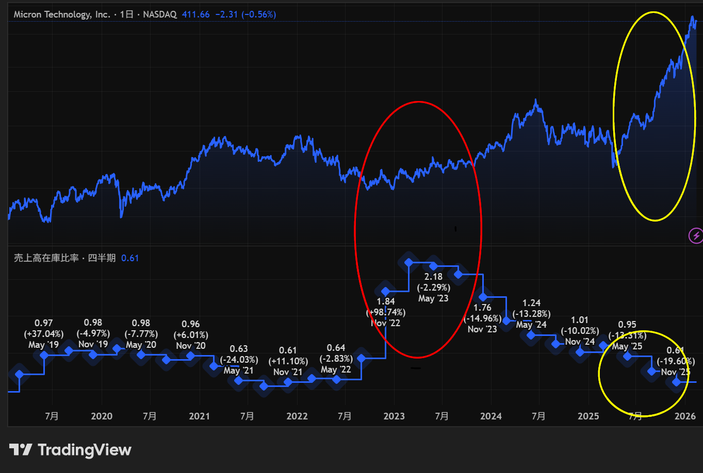

「NVIDIAがすごい」「次はAI半導体だ」
連日ニュースを賑わす半導体銘柄。しかし、いざ買ってみると、好決算なのに暴落したり、逆に悪材料が出尽くして急騰したりと、値動きが読めずに苦労している方も多いのではないでしょうか？
実は、半導体株投資において、一般的な指標であるPER（株価収益率）や単純な売上高だけを見ていると、「サイクルの罠」にハマってしまいます。
今回は、機関投資家や熟練のトレーダーが、決算書やニュースのどこを“凝視”しているのか、その「本当に重要な指標」を3つに絞って解説します。
指標①：売上高在庫比率
半導体投資で最も基本にして、最も重要なのが「シリコンサイクル（在庫の波）」です。
半導体は「好況（作りすぎ）→ 在庫過多 → 価格下落 → 減産 → 在庫不足 → 価格高騰」というサイクルを数年単位で繰り返します。半導体は製品寿命が短いため、在庫が積み上がると価格を下げて売るしかなくなり、利益を圧迫します。
ここに注目！
売上高在庫比率（在庫が売上の何％を占めるか）
計算式：(在庫（棚卸資産） ÷ 売上高) × 100
実は、半導体株の底打ちは、「売上高在庫比率が過去最高水準に達し、これ以上悪くなりようがない」というタイミングで起こります。 「在庫がパンパンで、もう誰も買わない」とニュースで悲観されている時こそ、比率が低下に転じる（＝サイクルが反転する）一歩手前なのです。
売上が減っているのに、在庫比率がグングン上がっている銘柄は避ける。逆に、比率がピークに達して、横ばいから低下し始めた銘柄は、株価のロケット発射が近いかもしれません。

売上高在庫比率と株価の逆相関イメージ：マイクロン・テクノロジーのチャート
指標②：設備投資額（Capex）と受注残高
半導体業界は、巨大なサプライチェーンで繋がっています。「誰かの支出は、誰かの売上」です。特に注目すべきは、業界のリーダーたちの財布の紐です。
1. ビッグテックの設備投資（Capex）
Microsoft、Google、Metaなどの「ハイパースケーラー」が、データセンターにどれだけお金を使う計画か？
➡ この数字が増えれば、NVIDIA（GPU）やBroadcom（通信半導体）の売上が約束されます。
2. TSMCの設備投資計画
世界最大のファウンドリであるTSMCが「来年は設備投資を増やす」と言えば？
➡ 東京エレクトロンやレーザーテック、Applied Materialsなどの「製造装置メーカー」の株価にとって最強の好材料となります。
3. 製造装置メーカーの「受注残高（Backlog）」
装置メーカーを見る時は、現在の売上よりも「受注残高」を見ましょう。これは「将来の売上が確約されている分」であり、数ヶ月〜半年先の業績を占う先行指標となります。
指標③：最先端技術の「歩留まり」と「パッケージング」
これまで半導体は「微細化（回路をどれだけ細くできるか）」がすべてでした。しかしAI時代では、それだけでは足りなくなっています。特にAI時代において重要なのは以下のキーワードです。
歩留まり（Yield）
微細化が進むほど、「作ったチップのうち、何％が正常に動くか」という歩留まりが重要になります。
- 歩留まりが低いと： 製造コスト増、出荷量停滞、利益率悪化の悪循環。
- 歩留まりが改善すると： 利益率が一気に改善し、株価が跳ねることも珍しくありません。
TSMCやSamsungの決算で歩留まりに関するコメントが注目されるのはこのためです。
HBMの採用比率（メモリ企業の場合）
Samsung、SK Hynix、Micronなどのメモリ企業を見る場合、単なるDRAM市況だけでなく、「利益率の高いHBM（AI用メモリ）のシェアがどれだけ取れているか」が勝敗を分けます。
CoWoSなどのパッケージング能力
今、GPUやHBMが“足りない”と言われる理由は、チップそのものが不足しているからではありません。本当のボトルネックは、それらを組み立てる「後工程（パッケージング）」が追いついていないことです。
パッケージングでは、チップを積み重ねる、配線をつなぐ、基板に載せるといった高度な作業が必要です。特に CoWoS（Chip on Wafer on Substrate） のような先端パッケージは、AI向けGPUやHBMに必須です。
ここが詰まると、どれだけチップを作っても製品として出荷できません。つまり、パッケージング能力＝AI時代の“真の供給力”と言っても過言ではありません。
【注意】PER（株価収益率）の罠
最後に、最も多くの人が陥る罠について触れておきます。
「半導体株は、PERが高い時に買い、低い時に売る」という格言があります（あくまで極端な例ですが、真理を含んでいます）。
- サイクルの底（不況）： 利益が激減するため、PERは異常に「割高」に見えます。しかし、そこが株価の底であることが多い。
- サイクルの頂点（好況）： 利益が爆発的に出るため、PERは非常に「割安」に見えます。しかし、そこから需要が急減し、株価が暴落することがあります。
「PERが低いからお買い得」と飛びつくと、そこがサイクルの頂点（天井）だった、というのはよくある失敗です。PERはあくまで参考程度にし、これまで挙げた「在庫」や「先行投資」の動きを優先してください。
まとめ：数字の裏にあるストーリーを読む
半導体株投資で勝つために本当に重要な指標は、以下の3つです。
- 在庫の増減（シリコンサイクルの現在地）
- 大手顧客の設備投資計画（将来の需要）
- 特定の技術トレンドへの関与度（AI、HBM、後工程）
表面的な数字だけでなく、産業全体の「モノとお金の流れ」をイメージできるようになると、半導体株の値動きが今までとは違った景色に見えてくるはずです！